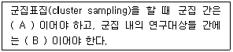
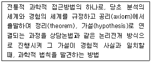
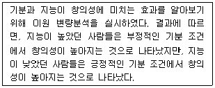
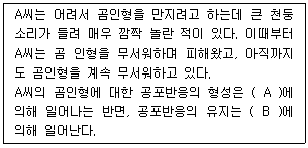
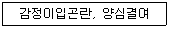
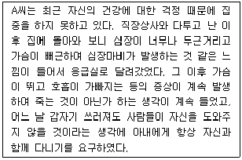
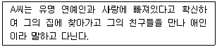
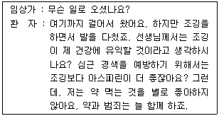
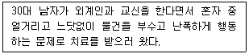
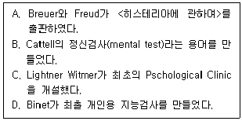

임상심리사-1급 (2012-09-15 기출문제)
1과목: 임상심리연구방법론
1. t-test의 기본 가정이 아닌 것은?
- 표본이 무선 표집되어야 한다.
- 표본 평규차의 분포가 정상분포 해야 한다.
- 표본이 추출된 모집단의 변산이 동질적이어야 한다.
- 변인돌 간의 상관이 낮아야 한다.
(정답률: 알수없음)

2. 서스톤척도는 어떤 측정수준에 해당하는가?
- 명목척도
- 등간척도
- 비율척도
- 서열척도
(정답률: 알수없음)
3. 순수실험설계(true experimental design)의 특징이 아닌 것은?
- 외생변수의 통제
- 독립변수의 조작
- 비동질 통제집단의 설정
- 실험집단과 통제집단에 대한 무작위 할당
(정답률: 알수없음)
4. 다음 중 횡단조사에 관한 설명으로 옳은 것은?
- 동일한 현상을 동일한 대상에 대해 반복적으로 측정하는 조사방법이다.
- 특정시점에서의 집단 간 차이를 연구하는 방법이다.
- 각 기간 동안에 일어난 변화에 측정이 목적이다.
- 종단조사에 비해 표본의 크기가 상대적으로 작다.
(정답률: 알수없음)
5. 평균이 30이고, 표준편차가 5인 분표에서, 원점수 25를 z점수로 변환하면?
- -1
- 0
- 1
- 2
(정답률: 알수없음)
6. 상관관계에 관한 설명으로 틀린 것은?
- 사례수가 부족하면 상관의 크기가 작아질 수 있다.
- 두 변인 간에 곡선적인 관계가 있는 경우에 상관계수가 통계적으로 유의미하지 않게 나올 수 있다.
- 모집단으로부터 제한된 범위의 표본만을 표집하는 경우에 상관관계가 통계적으로 유의미하지 않게 나올수 있다.
- 두 변인 간에 인과관계가 있다고 해서 두 변인 간에 반드시 상관관계가 존재하는 것은 아니다.
(정답률: 알수없음)
7. 연구의 외적 타당도에 영향을 미치는 것으로써, 통제집단에 있는 연구대상들이 실험집단에 있는 연구대상들 보다 더 나은 결과가 나타나도록 노력하는 현상을 무엇이라 하는가?
- John Henry 효과
- Hawthorne 효과
- 연구자 효과
- 실험자 효과
(정답률: 알수없음)
8. 측정오차(error of measurement)에 관한 설명으로 틀린 것은?
- 비체계적 오차는 상호상쇄(self-compensation)되는 경향도 있다.
- 체계적 오차는 항상 일정한 방향으로 작용하는 편향(bias)이다.
- 비체계적 오차는 측정대상, 측정과정, 측정수단 등에 따라 일관성 없이 영향을 미침으로써 발생한다.
- 측정의 오차를 신뢰성 및 타당성과 관련지었을 때 신뢰성과 타당성은 정도의 개념이 아닌 존재개념이다.
(정답률: 알수없음)
9. 종단연구(longitudinal study)의 하나로 각 시점 마다 동일한 사람들을 조사하는 방법은?
- 추세연구(trend study)
- 패널연구(penel study)
- 코호트연구(cohort study)
- 시계열연구(time-series study)
(정답률: 알수없음)
10. 중심경향측정치(measures of central tendency) 중 명목척도(nominal scale)에서 구할 수 있는 유일한 중심경향 측정치로 표본오차에 크게 영향을 받는 것은?
- 최빈치
- 중앙치
- 산술평균
- 가중평균
(정답률: 알수없음)
11. 표본의 크기결정을 위한 고려사항과 가장 거리가 먼 것은?
- 타당도
- 신뢰수준
- 오차의 한계
- 모집단의 표준편차
(정답률: 알수없음)
12. 다음 ( )안에 알맞은 것은?

- A – 동질적, B – 이질적
- A – 동질적, B – 동질적
- A – 이질적, B – 동질적
- A – 이질적, B – 이질적
(정답률: 알수없음)
13. 다음 중 변량분석에서 동일 사례수 가정이 파괴되는 상황과 밀접한 관계가 있는 것은?
- 결측치
- 반복측정설계
- 짝짓기설계
- 라틴스퀘어설계
(정답률: 알수없음)
14. 다음은 무엇에 관한 설명인가?

- 연역법
- 귀납법
- 직관법
- 반증법
(정답률: 알수없음)
15. 수험생들이 임상심리사 1급 시험을 치는데 걸리는 시간이 평균 180분, 표준편차 20분의 정규분포를 보인다고 한다. 수험생의 90%에게 충분한 시간을 주려면 시험시간을 약 얼마로 정하여야 하는가? (단, 10분 단위 미만은 버림으로 계산하시오)
- 210분
- 220분
- 230분
- 240분
(정답률: 알수없음)
16. 어떤 시험이 매우 어려워서 낮은 점수를 받은 사람은 매우 많은 반면, 높은 점수를 받은 사람은 적은 경우에 이 분포는 어떤 형태를 보일 가능성이 큰가?(오류 신고가 접수된 문제입니다. 반드시 정답과 해설을 확인하시기 바랍니다.)
- 정상분포
- 부적편포
- 정적편포
- 양봉분포
(정답률: 알수없음)
17. 다음 사례의 결과는 어떤 효과가 나타났다는 것을 의미하는가?

- 기분의 주효과
- 지능의 주효과
- 창의성과 주효과
- 기분과 지능의 상호작용
(정답률: 알수없음)
18. 거트만척도에서 응답자의 응답이 이상적인 패턴에 얼마나 가까운가를 측정하는 것은?
- 단일차원계수
- 스캘로그램
- 재생가능계수
- 최소오차계수
(정답률: 알수없음)
19. 가설검정에 있어서 연구자가 범할 수 있는 제2종 오류(Tyoe Ⅱ error)는 어떤 경우에 발생하는가?
- 영가설이 참일 때 영가설을 수용하는 경우
- 영가설이 거짓일 때 영가설을 수용하는 경우
- 영가설이 참일 때 영가설을 기각하는 경우
- 영가설이 거짓일 때 영가설을 기각하는 경우
(정답률: 알수없음)
20. 다음 기술 중 조작적 정의에 해당하지 않는 것은?
- 혈중 알콜농도에 따라 음주운전의 결과를 확인하기 위해 소주를 1잔, 2잔, 3잔 마신 그룹을 나누의 조사한다.
- 배고픔에 대한 동기의 정도를 일정기간 동안 굶은 정도를 다르게 하여 측정한다.
- 학업성취도라는 개념을 듣기, 읽기, 말하기 등의 합의의 개념으로 한다.
- 학생들의 성적향상을 실험변수로 하였을 때 어떻게 학생들의 성적을 향상시킬 것인가에 대한 구체적은 방법을 제사하여 알아본다.
(정답률: 알수없음)
2과목: 고급이상심리학
21. DSM-IV의 성적 장애 및 성 정체감 장애에 해당되지 않는 것은?
- 동성애
- 물품음란증
- 성욕감퇴장애
- 성적흥분장애
(정답률: 알수없음)
22. 다음 중 섭식장애에 관한 설명으로 틀린 것은?
- 신경성 식욕부진증 환자들 중 많은 수가 폭식행동을 보이기도 한다.
- 신경성 식욕부진증 환자에게 재발은 비교적 흔한편이다.
- 신경성 폭식증 환자들은 폭식행동 후 체중 증가를 억제하기 위한 보상행동을 과도하게 보여 체중이 감소하는 경향이 있다.
- 신경성 폭식증 환자를 위한 치료의 초기 목표는 폭식행동-배출행동의 악순환을 끊고 섭식행동을 정상화하는 것이다.
(정답률: 알수없음)
23. 다음 중 정신분열증의 증상에 대한 설명으로 틀린 것은?
- 항정신병 약물에 주로 반응하는 증상은 양성증상이다.
- 지각장애 중 가장 두드러진 것은 환시이다.
- 정신분열증의 다양한 증상 중 가장 근원적인 것은 사고장애이다.
- 전조(전구)기, 활성기, 잔류기의 총 기간이 6개월 이상이다.
(정답률: 알수없음)
24. 다음 중 노인우울증의 특징에 관한 설명으로 옳은 것은?
- 젊은 연령층과는 달리 남녀 유병율이 비슷하다.
- 신체증상. 건강염려증적 호소, 죄책감이 빈번하다.
- 기억을 효율적으로 인출하는 능력의 저하가 흔하다.
- 조발성(early onset)보다 만발성(late onset)에서 우울증 가족력이 높다.
(정답률: 알수없음)
25. 알코올 관련 장애에 대한 설명으로 틀린 것은?
- 알코올 의존 : 잦은 음주로 인하여 알코올에 대한 내성이 생겨 알코올 섭취량이나 빈도가 증가하고 술을 마시지 않으면 금단 현상이 나타난다.
- 알코올 금단 : 알코올 사용이 중단되거나 감소된 후에 알코올의 혈중 농도가 급속히 떨어지는 4~12시간 이내에 시작된다.
- 알코올 남용 : 잦은 과음으로 직장, 학교, 가정에서의 역할을 제대로 수행하지 못하여 법적인 문제를 일으키며 내성이나 금단 증상이 심하다.
- 알코올 중독 : 과도하게 알코올을 섭취하여 심하게 취한 상태에서 부적응 행동이나 신체생리적 변화가 나타나는 상태이다.
(정답률: 알수없음)
26. 다음 중 학습장애에 대한 설명으로 틀린 것은?
- 지능수준은 평균범위에 속하는 경우가 많다.
- 운동협응능력에 이상이 있을 수 있다.
- 주된 치료방법은 약물치료이다.
- 독해장애아동은 학년이 높아질수록 전 과목의 성적이 저하될 수 있다.
(정답률: 알수없음)
27. 다음 사례에서 A씨가 곰인형에 대해 공포 반응을 형성하고 유지해 나가는 과정을 Mowrer의 2요인이론(two-factor theory)으로 설명하려고 한다. ( )안에 알맞은 것은?

- A – 고전적 조건형성, B – 조작적 조건형성
- A – 조작적 조건형성, B – 고전적 조건형성
- A - 처벌, B - 부적강화
- A - 처벌, B - 정적강화
(정답률: 알수없음)
28. 다음 중 우울증의 역학적 특징에 관한 설명으로 틀린 것은?
- 우울증은 어떤 연령대에서도 시작될 수 있으나 평균 발병연령은 20대 중반이다.
- 아동기와 청소년기 모두 남아보다 여아가 높은 유병률을 보인다.
- 우울증을 한 번 경험한 사람은 그렇지 않은 사람에 비해 우울증을 경험할 가능성이 높다.
- 충동성이 강한 청소년은 우울증 상태에서 자살을 하는 경향이 높다.
(정답률: 알수없음)
29. 다음 증상은 어떤 인격장애의 핵심적은 내용인가?

- 편집성 인격장애
- 강박성 인격장애
- 반사회적 인격장애
- 경계성 인격장애
(정답률: 알수없음)
30. 다음 사례에서 A씨의 진단명으로 가장 적합한 것은?

- 감별불능 신체형장애(undifferentiated somatoform disorder)
- 광장공포증을 수반하지 않은 공황장애(panic disorder without agoraphobia)
- 통찰을 결여한 건강염려증(hypochondriasis, without insight)
- 다른 장애에 분류되지 않는 충동조절장애(impulse-control disorder not otherwise specified)
(정답률: 알수없음)
31. 다음 중 성격장애별 특징이 틀리게 연결된 것은?
- 회피성 성격장애 – 거절에 대한 두려움
- 강박성 성격장애 – 완벽주의
- 의존성 성격장애 – 항문기 고착
- 반사회성 성격장애 – 공감능력 부족
(정답률: 알수없음)
32. 다음 중 수면장애의 유형이 다른 하나는?
- 불면증(Insomnia)
- 수면 중 경악장애(Sleep terror disorder)
- 과다수면증(Hypersomnia)
- 수면발작증(Narcolepsy)
(정답률: 알수없음)
33. 다음은 어떤 망상의 유형에 해당하는가?

- 질투망상
- 피해망상
- 애정망상
- 허무망상
(정답률: 알수없음)
34. 경계선 성격장애의 주요 증상과 임상적 특징이 아닌 것은?
- 이상화와 평가절하
- 반복적인 자살시도
- 자신에게 관심을 끌기 위해 외모를 사용
- 정체감 혼란
(정답률: 알수없음)
35. DSM-IV의 지적장애 진단 기준에 대한 설명으로 옳은 것은?
- 지능지수 20 또는 25 이하는 심한 정도의 정신지체(severe mental retardation)에 해당한다.
- 표준화검사에 의해 지능을 측정할 수 없는 경우는 일단 중간정도의 정신지체로 진단한다.
- 18세 이전에 발병해야 한다.
- 지적장애는 지능지수 70이하인 경우로 확진한다.
(정답률: 알수없음)
36. 정신병리에 대한 행동주의 관점의 설명으로 틀린 것은?
- 부적강화는 대상 행동의 빈도수를 감소시킨다.
- 부분강화는 연속강화보다 소거하기가 어렵다.
- 변화비율 강화계획의 대표적 예로 도박을 들 수 있다.
- Premack의 원리는 고빈도수의 활동이 저빈도수의 활동을 강화한다는 것이다.
(정답률: 알수없음)
37. 이상행동 및 정신장애에 대한 판별 기준 중 통계적 기준에 대한 설명으로 틀린 것은?
- 이 기준을 적용하는 대표적 예는 지능지수이다.
- '평균으로부터 두 배의 표준편차만큼' 이라는 기준은 연구자들의 경험적 근거에 기초한다.
- 정신지체와 학습장애의 경우 이 기준을 적용한다.
- 정상분포 개념을 이용한다.
(정답률: 알수없음)
38. 성도착증(paraphilias)에 관한 설명으로 틀린 것은?
- 문화권마다 수용되는 성적 행위나 대상이 다르기 때문에 성도착증은 사회문화적 요인을 고려해야 한다.
- 남녀의 발생비율이 20:1로 추정될 만큼 압도적으로 남자에게 많이 나타난다.
- 노출증은 낯선 사람에게 성기를 노출시키지만, 성행위를 하려고 시도하는 경우는 드물다.
- 소아기호증은 특히 여아를 선호하는 개인의 경우 만성적이며, 남아를 선호하는 비율이 여아를 선호하는 비율의 2배로 추정된다.
(정답률: 알수없음)
39. 정신분열증의 치료에 관한 설명으로 틀린 것은?
- 일반적으로 가족치료에는 교육적 요소와 치료적 요소가 통합되어 있다.
- 항정신병 약물의 부작용인 지연성 운동장애는 해당 약물을 중단하면 쉽게 회복된다.
- 토큰경제는 흔히 정신과 입원환자를 대상으로 정신병적 행동을 감소시키는데 활용된다.
- 비전형적 항정신병 약물은 양성증상뿐 아니라 음성증상에도 효과가 있는 것으로 알려져 있다.
(정답률: 알수없음)
40. 다음 중 이상심리학에서 보편적으로 적용되고 있는 정상성과 이상성의 기준에 관한 설명으로 틀린 것은?
- 개인이 속한 문화나 집단에서 기대되고 용인되더라도 DSM-IV 준거에 합당하면 이상행동으로 볼 수 있다.
- 개인의 부적응에는 별 영향을 미치지 않으나 심하게 고통을 느끼는 심리 상태는 이상행동으로 간주할 수 있다.
- 일상생활, 사회적, 직업적 부적응을 초래하는 주의 집중력을 기억력 저하는 이상행동이다.
- 정신지체와 학습장애를 비롯한 일부 정신장애의 경우 통계적 기준을 적용하여 진단할 수 있다.
(정답률: 알수없음)
3과목: 고급심리검사
41. 다음 면담의 내용에서 시사되는 환자의 사고 특성은?

- 우원적 사고(Circumstantiallty)
- 사고의 비약(Flight of ldea)
- 보속증(Perseveration)
- 사고 차단(Thought Blocking)
(정답률: 알수없음)
42. 측정하려고 하는 어떤 대상과 관련된 각 쌍의 형용사를 제시하고 형용사의 연속선상에서 자신의 감정이 해당하는 위치를 결정하여 표시하는 척도는?
- 의미 변별 척도
- Guttman 척도
- Thurstone 척도
- Likert 척도
(정답률: 알수없음)
43. 심리평가 보고서 작성에 대한 설명으로 틀린 것은?
- 모호하고 빈번하게 자주 사용되는 일반적이 진술을 피한다.
- 평가 결과의 해석은 피검자와 의뢰자 모두에게 내용적으로 이해 가능해야 한다.
- 보고서에 자신의 의견을 기술할 때, 이를 입증할만한 객관적 정보 또는 기법에 근거해야 한다.
- 해석의 분명한 근거를 제시하기 위해 반드시 원자료의 반응을 그대로 언급하여야 한다.
(정답률: 알수없음)
44. Wechsler가 주장한 지능의 개념에 포함되지 않는 것은?
- 새로운 상황에 적응하기
- 통찰력을 가지고 문제 해결하기
- 목표를 세우고 이를 달성하기
- 감정을 적절하게 조절하기
(정답률: 알수없음)
45. 다음 사례에서 환자의 면담을 수행하는 요령과 가장 거리가 먼 것은?

- 심하게 흥분하고 공격성의 징후를 보이면 면담을 중지한다.
- 관심영역을 자유롭게 말하도록 공감적인 개방형 질문을 사용한다.
- 공격성의 징후를 보이던 그런 행동은 허용할 수 없다고 경고한다.
- 질문의 초점을 벗어나 엉뚱한 이야기를 늘어놓을 때 관심을 보이지 않는다.
(정답률: 알수없음)
46. 다음 중 주의력과 정신적 추적능력을 측정하는 검사로 부적합한 것은?
- 100에서 연속 7빼기 검사(serial 7)
- 선로 잇기 검사(Trail Making Test)
- 사물 이름 명명 검사(Boston Naming Test)
- 숫자 외우기(Digit Span)
(정답률: 알수없음)
47. 다음 중 지능검사에 관한 설명으로 옳은 것은?
- 웩슬러 지능 검사는 Spearman의 g요인 개념과 Thorndike(Thurstone 인지 확인을 요함)의 중다요인 지능 개념을 동시에 구현하였다.
- 웩슬러 지능 검사에서는 정신연령과 생활연령 간의 비율로 IQ를 산출한다.
- 웩슬러 지능 검사는 성인용과 아동용 두 가지 형태로 사용된다.
- 한국판 웩슬러 성인용 지능 검사(K-WAIS)는 WAIS-Ⅲ를 이용하여 표준화 하였다.
(정답률: 알수없음)
48. MMPI의 타당도 척도 중 L척도의 상승이 의미하는 바가 아닌 것은?
- 가장 보편적인 인간의 약점도 부인하려고 하는 경우
- 인사선발과 같은 상황에서 과도하게 좋은 인상을 주려고 애쓰는 정상인의 경우
- 대체로 고등교육을 이수한 정상인의 반응인 경우
- 세속적이고 사회적 순응성이 강한 경우
(정답률: 알수없음)
49. 다음 중 환자에게 반응에 대한 책임감과 융통성을 가장 많이 부여해 주는 면접 질문의 유형은?
- 명료형
- 직면형
- 촉진형
- 개방형
(정답률: 알수없음)
50. 다음 중 능력적성검사에 대한 설명으로 틀린 것은?
- 수검자의 현재 인지적 능력을 바탕으로 향후 직업에서의 성공가능성을 예측한다.
- 성격이나 개인적 취향과의 부합성과는 관련 없는 구성개념을 측정한다.
- 타당한 해석과 관련하여 준거타당도를 확보하는 것이 중요하다.
- 스트롱 직업흥미검사가 대표적인 예이다.
(정답률: 알수없음)
51. MMPI의 1–3/3-1 상승척도 쌍에 관한 설명으로 틀린 것은?
- 남성보다 여성에게서 더 흔하다.
- 흔히 신체형 장애나 동통장애 진단을 받는다.
- 부인, 투사, 합리화 방어기제를 지나치게 사용한다.
- 특히 척도 2가 척도 1과 3보다 상당히 높은 경우 전환 증상을 보일 수 있다.
(정답률: 알수없음)
52. 확산적 뇌손상을 입은 환자에게 후속평가가 필요한지 여부를 결정하기 위해서 신경심리평가를 실시할 때, 손상여부를 우선적으로 확인해야 하는 기능이 아닌 것은?
- 정서기능
- 기억기능
- 학습기능
- 주의기능
(정답률: 알수없음)
53. 다음 중 집단 내 규준이 아닌 것은?
- T 점수
- 편차 IQ
- 정신연령
- 스태나인 척도
(정답률: 알수없음)
54. 아동용 검사가 별도로 제작되어 있는 검사로만 짝지어진 것은?
- 지능검사 – 주제통각검사 – 문장완성검사
- 지능검사 – BGT 검사 – 문장완성검사
- 주제통각검사 – Rorschach검사 – 동작성 가족화검사
- 주제통각검사 – 문장완성검사 – 인물화검사
(정답률: 알수없음)
55. MMPI에 관한 설명으로 틀린 것은?
- MMPI척도는 경험적 접근 방식에 따라 문항이 분석되고 구성되었다.
- MMPI에서 우울증 척도가 상승한 것은 진단적으로 우울장애일 가능성을 시사한다.
- 투사법 검사에서와 마친가지로 MMPI를 실시하는 과정에서 검사자와 피검자의 관계도 결과에 영향을 미칠 수 있다.
- MMPI에서 T점수가 70 이상 상승된 임상척도들을 2개씩 묶어서 해석하는 상승척도쌍(2-code type) 해석방식은 형태분석에 해당한다.
(정답률: 알수없음)
56. 다음 심리검사의 윤리 강령 중 검사를 실시하기 전에 피검자나 피검자의 법적 대리인으로부터 동의를 받아야 하는 경우는?
- 법률에 따라 전국적인 검사 실시가 필요할 경우
- 정규적인 학교 활동의 일부로 검사를 실시할 경우
- 임상에서 정신병리 선별을 목적으로 개발된 검사의 표준화 작업을 실시할 경우
- 고용이나 입학허가를 위해 검사를 실시할 경우
(정답률: 알수없음)
57. 60대 남자가 교통사고를 당한 후, 사고나 행동을 유연하게 전환하지 못하여 보속증(perseveration)을 자주 보인다. 이러한 결함을 검사하기 위한 방법과 가장 거리가 먼 것은?
- Go-No-Go 검사
- Luria 3단계(주먹-손날-손바닥) 검사
- 선로 잇기 검사 A형(Trail Making test, Part A)
- 삼각파도-사각파도 그리기(Alternating Square Triangle)
(정답률: 알수없음)
58. 40대 주부 A씨는 숙제를 하지 않고 컴퓨터 게임을 하고 있는 아이에게 소리를 지르고 심하게 야단을 쳤다. A씨는 평소 화가 나면 이를 참지 못하고 직접 표출하는 패턴을 보인다. 이러한 분노표현방식을 고려할 때, A씨가 나타낼 가능성이 가장 높은 MMPI 결과는?
- 2-4-8 코드 유형
- 3-1-2 코드 유형
- 4-6 코드 유형
- 5-8 코드 유형
(정답률: 알수없음)
59. 심한 환청과 망상을 보이는 20대 초반 남성의 Wechsler 지능검사 결과가 언어성 IQ=113, 동작성 IQ=77, 전체 IQ=98 일 때, 가장 우선적으로 시행해야할 해석 절차는?
- 95% 신뢰수준에서 현재 지능은 98±1.96×(측정의 표준 오차)의 범위에 속하는지 산출한다.
- 전체 소검사의 평균을 기준으로 소검사 분산분석을 실시해야 한다.
- 기본지식, 산수문제 및 모양맞추기 소검사로 병전 지능을 추정한다.
- 소검사 평가치가 5점 이상 차이가 날 때 유의한 것으로 해석한다.
(정답률: 알수없음)
60. Holland 적성탐색검사에서 측정하는 직업적 성격유형과 대표적인 직업이 바르게 짝지어진 것은?
- 실재적 유형(Realistic type) - 공인회계사, 은행원, 안전관리사 등
- 사회적 유형(Social tyoe) - 상담가, 유치원 교사, 언어치료사 등
- 탐구적 유형(Investigative type) - 경제분석가, 컴퓨터 프로그래머, 세무사 등
- 관습적 유형(Conventional type) - 기술자, 정비사 등
(정답률: 알수없음)
4과목: 고급임상심리학
61. 다음 임상심리학 발전의 주요항목을 순서대로 바르게 나열한 것은?

- A→B→C→D
- C→D→B→A
- B→C→A→D
- B→A→C→D
(정답률: 알수없음)
62. 다음 정신분석치료의 해석 기법을 중 그 목표와 성격이 다른 하나는?
- 비교해석
- 저항해석
- 직면해석
- 명료화 해석
(정답률: 알수없음)
63. 신경심리학적 평가의 유의사항으로 옳은 것은?
- 심한 두부 외상의 경우 두뇌의 기질적 손상 여부의 판정은 평가의 주요 관심사가 된다.
- 폐쇄성 두부손상의 경우 다양한 기능의 효율성 감소와 정신과적 합병증의 평가가 주요 관심사가 된다.
- 원인 및 손상의 정도와 관련 없이 신경심리검사의 신뢰도는 지능검사의 결과에 비해 높은 편이다.
- 간질의 지속기간에 따라 나타나는 인지적 손상은 항경련제의 영향과는 무관하다.
(정답률: 알수없음)
64. 다음 중 문제행동이 내담자에게는 자각되지 않지만 타인과의 의사소통 과정에서 쉽게 판별될 수 있을 때 가장 적합한 평가 방법은?
- 질문지법
- 관찰법
- 자기감찰법
- 과제수행법
(정답률: 알수없음)
65. 일반적으로 긴장성 두통환자에게 가장 널리 사용되며 이마에 전극을 부착시켜 시행하는 바이오 피드백 기법은?
- 시각적 바이오 피드백
- 청각적 바이오 피드백
- 온도 바이오 피드백
- 근전도 바이오 피드백
(정답률: 알수없음)
66. Rorschach 검사에서 자살행동을 설명하는 지표로 부적합한 것은?
- D ＞ 0
- MOR ＞ 3
- CF+C ＞ FC
- FU+UF+U+FD ＞ 2
(정답률: 알수없음)
67. 변증법적 행동치료의 4가지 기술훈련 방식에 해당하지 않는 것은?
- 고통인내(distress tolerance)
- 행동시연(begavioral rehearsal)
- 마음챙김(mindfulness)
- 감정조절(emotianal regulation)
(정답률: 알수없음)
68. 지나친 청결반응을 보이는 강박장애환자에 대한 인지 행동적 설명으로 적합하지 않은 것은?
- 어떤 상황에서 강박행동을 보이는지를 관찰하여 분석한다.
- 강박행동 이면에 깔린 비합리적 신념과 부정적 사고를 탐색한다.
- 강박행동과 과련이 깊은 것으로 가정되는 걸음마기의 경험을 탐색한다.
- 강박행동을 한 후 얻게 되는 심리적 안정이나 이완, 관심 끌기와 같은 보상효과가 개입되어 있는지를 분석한다.
(정답률: 알수없음)
69. 다음 중 게슈탈트 치료에 관한 설명으로 가장 적합한 것은?
- 과학적 측면이 강조된다.
- 과거 경험이 현재에 의미 있는 영향을 준다.
- 비현실적인 기대를 변화시키는 것에 초점을 둔다.
- 현재 경험과 정서 및 행동에 대한 즉각적 자각에 초점을 둔다.
(정답률: 알수없음)
70. 다음 중 행동치료의 가정에 부합하지 않는 것은?
- 기이한 행동이나 심각한 결손행동의 이면에는 그에 상응하는 보편적인 원인 있다.
- 행동의 선행사건과 후속결과를 체계적으로 변화시킴으로써 의미 있는 행동변화를 가져올 수 있다.
- 정신질환의 질병모형의 입장을 거부한다.
- 절차가 분명히 규정되고 검증 가능한 이론을 적응하기 때문에 반복검증이 가능하다.
(정답률: 알수없음)
71. 임상심리사가 필요시 다른 전문가나 전문기관에 자문을 구해야 하는 조항은 윤리강령의 어떤 원칙에 해당되는가?
- 유능성
- 성실성
- 전문적·과학적 책임
- 인권 및 존엄성의 존중
(정답률: 알수없음)
72. 다음 중 상대적으로 치매와 관계가 없는 질환은?
- 알츠하이머병
- 파킨슨병
- 헌팅톤병
- 크론카이트-카나다 증후군
(정답률: 알수없음)
73. 다음 중 면접 질문의 유형과 예가 틀리게 연결된 것은?
- 개방형 : 학교에서 어떤 경험을 했는지 말해 주겠어요?
- 명료형 : 조금만 더 자세히 이야기해 주겠어요?
- 직면형 : 이전에 당신은 ... 라고 말했었는데요?
- 직접질문형 : 당신이 틀렸다고 아버지가 비판했을 때 어떻게 대답했나요?
(정답률: 알수없음)
74. 다음 중 인지치료에 관한 설명으로 틀린 것은?
- 인지적 재구성을 중요시 한다.
- 인지치료에서는 소크라테스식 대화(질문법)를 자주 활용한다.
- Beck는 정신분석 훈련을 배경으로 역등치료의 장점을 살리고자 하였다.
- 인지치료에서는 내현적인 가설적 구조를 가정하였다.
(정답률: 알수없음)
75. 다음 중 듣고 이해하는 능력을 읽고 이해하는 능력은 괜찮지만 특정 말소리를 선택하고 발음하는데 장애가 발생하는 문제 증상은?
- 베르니케 실어증
- 브로카 실어증
- 전도성 실어증
- 난득성 실어증
(정답률: 알수없음)
76. A유형 성격 사람들의 행동 양식 중 관상성 심장질환에 영향을 미치는 가장 중요한 심리적 위험 요소는?
- 적개심과 대인관계 지배성
- 긴장감과 반사회적 경향
- 우울과 사회기술 부족
- 불안과 대인예민성
(정답률: 알수없음)
77. 자문활동에 대한 저항의 일반적인 원인과 가장 거리가 먼 것은?
- 자문에 관여된 모든 당사자들의 비협력적 태도
- 피자문자나 자문자의 숨겨진 목적
- 피자문자의 비합리적 높은 기대
- 자문자의 역량과 태도에 대한 피자문자의 인정
(정답률: 알수없음)
78. 임상심리학의 역사에 대한 설명으로 틀린 것은?
- 제2차 세계대전 이후 재향군인을 위한 치료서비스 제공에서 임상심리학자의 역할이 증가하였다.
- 임상심리학의 관심은 초기부터 아동 및 성인 평가, 치료 등 다양한 활동 영역이었다.
- 과학자-전문가 모델은 Boulder 모델이라고 한다.
- 의학계나 주도하던 심리치료 활동에 심리학자가 진입하였다.
(정답률: 알수없음)
79. 내담자에게 자신이 전달하려는 내용을 정교화 하도록 도울 뿐만 아니라, 면접자도 그 메시지의 내용을 잘 이해하고 있음을 알려주는 역할을 하는 기법은?
- 부연설명
- 반영
- 요약
- 명료화
(정답률: 알수없음)
80. 인지치료의 사례설계 모형에서 이면신념의 역기능적 사고를 교정하는 치료전략으로 틀린 것은?
- 이면 신념(underlying belief)은 직접적으로 다루는 것이 효과적이다.
- 세상에 대한 신념이 잘못 학습된 것임을 깨닫게 하면 효과적이다.
- 부모와의 관계에서 병리적 상호작용을 이해시키고 변화시키면 효과적이다.
- 치료관계를 통해 건설적인 상호관계의 재형성 경험으로 이끌 수 있다.
(정답률: 알수없음)
5과목: 고급심리치료
81. 다음 중 심리치료의 공통적 치료 요인과 가장 거리가 먼 것은?
- 행동수정
- 통찰과 이해
- 정서적 발산
- 직면
(정답률: 알수없음)
82. 다음 중 인간 중심 치료에 관한 설명으로 틀린 것은?
- 인간은 자신의 잠재력과 가능성을 실현하려는 경향성을 타고난다.
- 상담자는 내담자의 문제를 해결해 주는데 적극적인 자세를 가져야 한다.
- 칼 로저스가 창시한 심리치료 이론이다.
- 자기개념과 경험 간의 불일치가 심리적 문제를 일으키는 주된 요인이다.
(정답률: 알수없음)
83. 동기강화상담에서 변화 단계의 유발인자로 간주되지 않는 것은?
- 공감
- 준비
- 의지
- 능력
(정답률: 알수없음)
84. 다음 중 파괴적 문제행동을 하는 청소년을 치료할 때 가장 초기에 시행되어야 할 일은?
- 행위에 대한 재귀인 익히기
- 도덕추론의 능력을 길러주기
- 한계를 설정하고 융통성 있게 실행하기
- 부모의 행동관리/문제해결을 가르치기
(정답률: 알수없음)
85. 심리치료에서 언어적·비언어적 행동 관찰에 관한 설명으로 틀린 것은?
- 치료자는 참여적 관찰자가 되어 내담자와의 상호작용에서 일어나는 행동의 불일치를 식별할 수 있어야 한다.
- 내담자의 문화적 배경에 따라 상담자의 행동이 다를 필요가 있다.
- 관계왜곡이란 치료 장면에서 내담자-치료자 이외의 제3의 어떤 인물이 존재하는 것과 같은 지각적 왜곡현상을 말한다.
- 내담자가 언어적·비언어적 행동 불일치인 혼합 메시지를 보일 때 내담자의 진심은 언어적 행동에서 파악될 수 있다.
(정답률: 알수없음)
86. 다음 중 병리적 인터넷 사용자를 상담할 때의 고려사항과 가장 거리가 먼 것은?
- 상담 목표가 인터넷을 끊는 것이 아니며 인터넷 사용에 대한 자기통제력을 증가시키는 것임을 강조해 준다.
- 부정적인 평가나 훈계는 도움이 되지 않으며 상담자는 가능하면 긍정적인 피드백을 제공해 준다.
- 효과적인 상담을 위해서는 가족상담의 병행이 필수적으로 권장된다.
- 약물치료의 병행은 필수적으로 권장된다.
(정답률: 알수없음)
87. 정신재활에 필요한 유용한 정보를 얻기 위해 이용되는 기능적 평가에 관한 설명으로 틀린 것은?
- 행동적 면담 : 가족체계, 사회관계, 직업기술, 여가활동 등을 조직적이고 체계적으로 면담하는 것이다.
- 직접 관찰 : 시간이 많이 소요되고, 신뢰성을 높이기 위해 관찰자의 훈련이 필요하다.
- 자기 관찰 : 문제 해동의 빈도 내용을 환자가 스스로 기록하고, 환자가 협조적이지 않을 때 자주 사용된다.
- 설문지 검사법 : 환자의 태도가 촉구나 격려를 해야 신뢰성 있는 정보를 얻는다면, 반드시 면담을 함께 해야 필요한 정보를 얻을 수 있다.
(정답률: 알수없음)
88. 노인 환자가 치료자와 효과적인 의사소통을 못하게 되는 이유와 가장 거리가 먼 것은?
- 치료자를 대하는 신중함의 증가
- 치료자에 대한 비현실적인 높은 기대
- 치료자를 자식같이 여기는 전이 발생
- 비의도적인 실수와 보고 누락
(정답률: 알수없음)
89. 알코올 중독으로 인한 어려움과 도박 중독으로 인한 어려움의 가장 핵심적인 차이라고 할 수 있는 것은?
- 정서적 고양상태에 이르기 위한 갈망
- 환자와 그의 가족에 대한 치료자의 양면적 감정
- 치료자가 갖게 되는 무력함과 환자에 대한 자만
- 환자의 자신의 문제에 대한 인식과 태도
(정답률: 알수없음)
90. 정신분석에서 내담자의 전이반응(transference)을 증가시키는 요인이 아닌 것은?
- 분석가의 익명성
- 분석가의 중립적 태도
- 분석가의 해결되지 않은 갈등
- 빈번하고 규칙적인 치료 회기
(정답률: 알수없음)
91. 다음 중 성폭력 피해자 심리치료에 관한 설명으로 틀린 것은?
- 자신은 피해자이며 책임은 전적으로 가해자에게 있음을 인정할 수 있게 도와야 한다.
- 성폭력 피해 기억의 생생한 재생은 가능한 하지 않는 것이 좋다.
- 분노와 슬픔을 적극적으로 표현할 수 있도록 도와야 한다.
- 성폭력 피해로 인한 법률적 및 신체적 문제에 대해서도 적절한 자문을 제공해야만 한다.
(정답률: 알수없음)
92. 학습 문제의 치료에 대한 설명으로 틀린 것은?
- 치료와 평가는 증상의 근원이 되는 지각, 인지와 같은 기본적인 과정을 매우 강조한다.
- 치료에서 외견상 동일한 학습 문제를 보이는 아동은 동일한 치료 방식을 적용하는 것이 원칙이다.
- 학습 문제에 가장 많은 영향을 미치는 인지과정으로는 작업기억력(또는 관리기능)으로 알려져 있다.
- 학습 문제를 가진 아동 중 상당수는 주의력 문제 혹은 우울이나 불안과 같은 정서 문제를 동반하고 있다.
(정답률: 알수없음)
93. 중독 상담의 개입방법 중 인지행동 치료에 관한 설명으로 틀린 것은?
- 알코올 사용 장애 환자들은 음주의 원인을 자기바난 같은 부정적 사고방식 때문이라고 설명하는 경향이 있다.
- 자극 노출과 같은 고전적 조건화 모델에 근거한 방법을 재발 방지 프로그램과 결합하면 효과가 크다.
- 부정적인 사고를 인지구조 변화 훈련을 통해 긍정적인 사고로 대치시킴으로서 치료 효과를 볼 수 있다.
- 자조 지침서 및 활동 일지를 이용하여 스스로의 행동을 조절 할 수 있다.
(정답률: 알수없음)
94. 다음 중 정신재활의 기본 원리에 관한 설명으로 틀린 것은?
- 내담자의 의존성을 신중하게 높이면 결국 내담자의 독립적인 기능력을 증대시킬 수 있게 된다.
- 정신재활의 두 가지 기본적인 개입방법은 내담자의 기술을 발전시키는 것과 내담자에 대한 환경적인 지원을 개발하는 것이다.
- 정신재활의 일차적인 목표는 치료적 통찰이 생기도록 하는 것이다.
- 재활은 미래 지향적이며, 희망이나 긍정적인 기대가 회복 절차의 결정적인 요인이 된다.
(정답률: 알수없음)
95. 정신상태검사 면접에 관한 설명으로 틀린 것은?
- 진단 면접시 부수적으로 사용된다.
- 모든 환자에게 필수적인 사항을 쉽게 확인하기 위해 사용된다.
- 인지, 정서, 행동의 문제점을 탐색하기 위해 사용된다.
- K-MMSE 같은 구조화된 방식을 이용하는 것이 간편하다.
(정답률: 알수없음)
96. 정신재활의 역사적 발달 과정에 관한 설명으로 틀린 것은?
- 19세기 도덕적 정신치료 시대에 혁신주의자들은 정신재활의 치료 목표를 환자의 상태가 허용할 수 있는데 까지 치료해야 하는 것으로 생각했다.
- 1차 세계 대전 말에는 정부가 정신장애가들의 고용문제에 적극적으로 나서서 정부차원의 직업 재활 프로그램을 운영하고자 하였다.
- 1960년대에는 미국과 유렵에서 약물이 개발되면서 정신장애자들에게 적극적인 입원 치료가 권장되었다.
- 최근의 정신재활은 인간자원개발, 직업재활에서 비롯된 기술 훈련 방식을 도입하고자 한다.
(정답률: 알수없음)
97. 자기표현 훈련이 가장 적합하지 못한 사람은?
- 거부를 하지 못하는 사람
- 남에게 이용당하는 사람
- 자신의 사고를 표현할 권리가 없다고 믿는 사람
- 타인을 못 믿는 사람
(정답률: 알수없음)
98. 다음 중 심리치료 방법과 그 대표적인 인물이 바르게 짝지어진 것은?
- 게슈탈트치료 – Eric Berne
- 의미치료 – Victor Franki
- 교류분석 – Otto Rank
- 정신역동 – Frederick Peris
(정답률: 알수없음)
99. 치료초기 내담자 평가의 일부로 실시하는 정신상태평가에서 평가 영역과 질문의 예의 연결이 가장 바르게 짝지어진 것은?
- 환각 – 당신의 생각이 외부의 어떤 힘에 의해 통제되는 것처럼 느낍니까?
- 망상 – 당신의 정신이 마비된 듯한 느낌을 갖습니까?
- 통찰 수준 – 당신이 어떻게 해서 입원하게 되었는지 알고 있습니까?
- 기억력 – 구르는 돌에 이끼가 끼지 않는다는 속담은 무슨 뜻입니까?
(정답률: 알수없음)
100. “공공장소에 가면 뭔가 끔찍한 일이 일어날 것이고 나는 그것에 대처하지 못할 것이다.” 라는 신념을 갖고 있는 내담자에게 가장 효과가 큰 것으로 알려진 행동치료 기법은?
- 실제 노출
- 자극 통제
- 이완 훈련
- 모델링
(정답률: 알수없음)